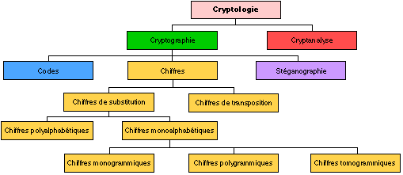

"La cryptologie, étymologiquement la science du secret, ne peut être vraiment considérée comme une science que depuis peu de temps. Cette science englobe la cryptographie – l’écriture secrète –, la cryptanalyse – l’analyse de cette dernière –, et la stéganographie – l’art de la dissimulation –" Tout d'abord, il faut définir un vocabulaire précis car on n'apprend pas à courir sans savoir marcher tout comme on ne se jette pas dans le grand bain sans savoir nager au péril de se noyer. Donc, la cryptographie se décompose en deux branche: la cryptanalyse et la cryptographie. Cyptographie : ensemble des techniques et méthodes utilisées pour transformer un message clair en un message inintelligible. Cryptanalyse : ensemble des techniques et méthodes utilisées pour retrouver le texte en clair à partir du texte crypté.
Attention le mot cryptographie n'est pas synonyme de cryptologie !
Voici un shéma qui résume la cryptologie :
Les premières traces de cryptographie remonte à plus de 2000 ans avant J-C en Egypte. Les techniques ont evolué depuis mais certaines ont la même base. Le concept de base est celui du chiffre : on remplace chaque lettre d'origine par un autre. On distingue alors deux types de chiffres :Chiffre de subtitution : chaque lettre est remplacée par une autre mais garde sa place d’origine.Chiffre de transposition : chaque lettre reste inchangée mais est mise à une autre place (principe de l’anagramme).On se concentrera essentiellement sur le chiffre de substitution qui se divise en trois catégories :Chiffre de substitution monoalphabétique: chaque lettre du message d’origine est toujours remplacée par une même autre lettre. Chiffre de substitution polyalphabétique : une même lettre du message d’origine peut être remplacée par plusieurs lettres différentes.Chiffre de substitution polygrammique : les lettres ne sont pas remplacées une par une mais par blocs de plusieurs (deux ou trois généralement).On retrouve deux autres technique :La cryptographie symétrique est la plus ancienne. En effet, elle permet de chiffrer et de déchiffrer à l'aide d'une seule et même clé. En revanche, la cryptographie asymétrique est un procédés intégrant 2 clés de chiffrement, une clé publique et une clé privée.
La cryptanalyse est utilisé dans deux cas, soit par le destinataire, soit par un ennemi qui intercepte le message. Ainsi deux mot différents sont utilisés.déchiffrement : opération par laquelle à partir d’un message chiffré on retrouve le message d’origine, connaissant l’algorithme de chiffrement et la clé. décryptement : même chose que le déchiffrement mais sans connaître la clé.
Une forme de crypraphie connue est le "code de césars". En effet, césars utilisait cette méthodes afin d'envoyer des ordres militaires en substituant une lettre par une autre plus loin dans l'alphabet. Il utilisait un décalge de 3 donc le a devenait le c, le b devenait le d ... Puis cette méthode s'est développé et maintentant les décalages sont infinis.